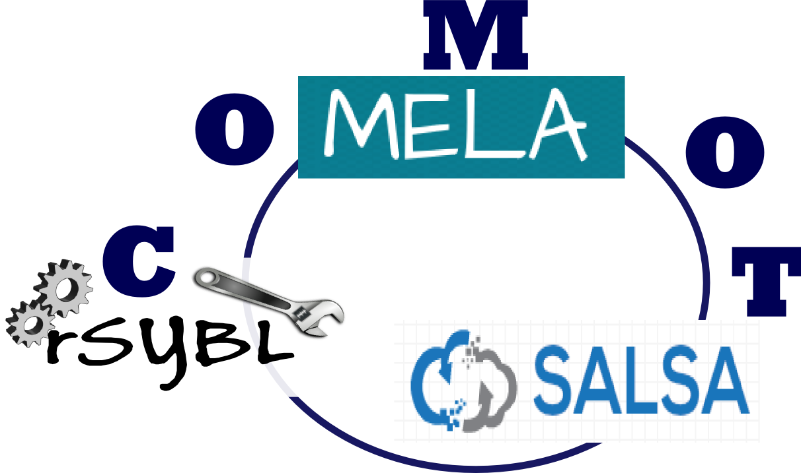

Tools for Software-defined Elastic Systems
rSYBL is a multi-cloud elasticity controller for Software-defined Elastic Systems, enabling users to describe their requirements at multiple levels through SYBL language.
MELA is a tool for monitoring and analysis of elastic cloud services, designed with elasticity in mind, providing features for structuring and enriching information collected from existing monitoring solutions, and discovering boundaries and patterns in elasticity behavior of cloud services
SALSA is a framework for orchrestration and configuration complex cloud-based application, supporting users to deploy applications on cloud and to configure the application dynamically at runtime. SALSA manipulates the application at multiple granular levels and stacks.
COMOT provides an easy to use integration layer for managing various aspects of elastic cloud services. In particular, COMOT provides a domain specific API to describe elastic cloud services, interacts with SALSA for deploying the description to virtualized infrastructures (e.g., OpenStack, Docker), relies on MELA for cloud service monitoring and analysis, and on rSYBL for run-time control of elastic cloud services.
QUELLE is a framework for evaluating and recommending deployment configurations for elastic systems from cloud offered services, that both provide the required elasticity, and fulfill cost, quality, and resource requirements
ADVISE
ADVISE is a framework "advising" on elasticity behavior of different cloud service parts.
Hybrid and Diversity-aware Collective Adaptive Systems
PRINGL
PRINGL is a domain-specific, visuo-textual language used for programming incentives for socio-technical systems (e.g., social-computing, crowdsourcing, SCUs, HDA-CAS). It fosters a modular approach in composing incentive elements that promotes code reusability and uniformity of incentives, helping cut down development and adjustment time, and creating a basis for development of standardized but tweakable incentives.
SmartCom
SmartCom provides communication functionality between a Hybrid Diversity-Aware Collective Adaptive System platform (HDA-CAS) on one side, and ICUs (Individual Computing Units, i.e., human-based services and software-based services) on the other side. SmartCom provides low-level communication and control primitives that effectively virtualize the peers to HDA-CAS platform. It offers the asynchronous (message-based) communication functionality for interacting with dynamically-evolving collectives of peers both through native HDA-CAS applications, as well as through various third-party tools, such as Dropbox, Android devices, Twitter or email clients.
Software-defined IoT Cloud Systems
Software-defined Machines
A framework for provisioning of large-scale software-defined IoT cloud systems. In our framework IoT cloud resources (e.g., gateways) are described as software-defined IoT units. The software-defined IoT units enable abstracting the underlying IoT cloud resources and allow for their management through well-defined APIs, exposed by these units. This framework enables dynamic, on-demand provisioning, configuration management and deploying of software-defined IoT units. For example, new features such as additional cloud communication protocols can be added to the IoT units and IoT cloud systems at runtime.
GovOps
GovOps (Governance and Operations) is a novel approach for cloud-based dynamic governance and operations management in software-defined IoT cloud systems. The main objectives of GovOps are twofold. On the one side, it aims to enable seamless integration of high-level governance objectives with concrete operations processes. On the other side, it supports performing such operational governance processes for IoT cloud systems. The rtGovOps is a runtime framework for governance and operations in software-defined IoT cloud system. Generally, rtGovOps provides runtime mechanisms to enable executing Operational Governance Processes in software-defined IoT cloud systems.